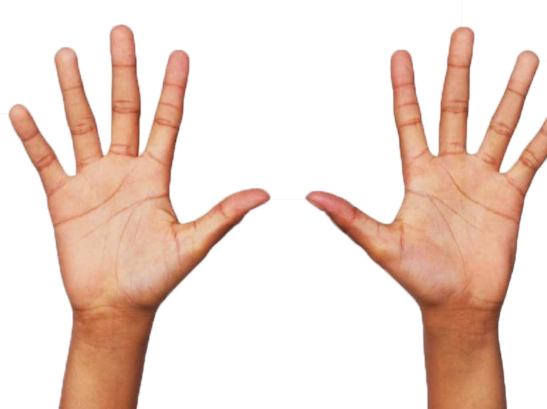
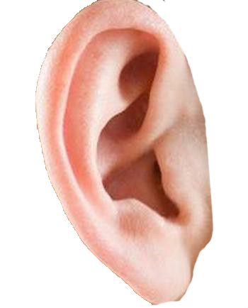
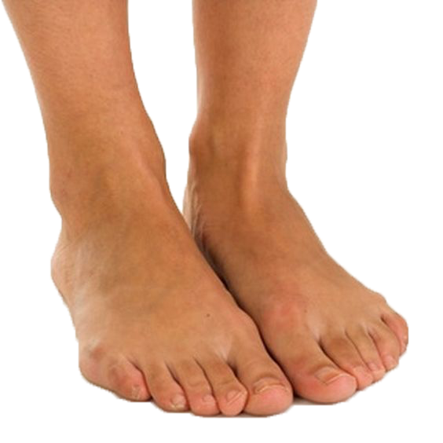

IntroIn this project, I aimed to find a new way to publish an article. I choose the article “skin hunger” of Mellisa Harris. In this website, I want people actually to feel the desire to touch skins. Therefore I translated this feeling into vision and interactive elements. I decide to use dialogue boxes to contain the conversations between Mellisa Harris and the artist Jamie diamond. The use of color in these dialogue boxes represent the color of their skins. The randomly displayed human body pictures would tremble as the cursor moves to them. As people scroll down and continue reading, the background color would change to red, representing the excited reactions people would make. To make the background more like a “skin,” I choose to make the title of this webpage as a tattoo. And the whole design of this project is aimed to simulate a comfortable, relaxed skin-touching interactive environment.
A conversation between artist Jamie Diamond and curator Melissa Harris



Where did you get the title for this project, Skin Hunger?
This term has been mentioned in many different contexts, but typically I read about
it through the lens of psychology—it is mainly used to describe the human ache for
physical contact with another person. Even prior to the pandemic, loneliness was an
epidemic. I think the COVID crisis just compounded a state of being that already
existed. Obviously now we are all affected by aspects of this, regardless of our
circumstances, and there are more severe ramifications to the current lack of
physical contact and intimacy. I started this work pre-pandemic—my research began
in 2015.
Is paid intimacy even intimacy? Are loneliness and lack of touch the same thing?
You could also ask: is paid sex even sex? I guess I’m programmed to think that
there’s a difference between authentic intimacy and performed intimacy, but in
reality it’s not so clear. Intimacy is subjective and can be performed: it might be very
real for the one it’s being performed for and not for the other, or both, or neither. In
all the different industries and service economies I’ve been researching, intimacy
manifests itself very differently—it’s very different within the Cuddle community
than, for instance, the various rental opportunities available in Japan.
Regarding loneliness being synonymous with lack of physical contact: they are not
the same thing, but one is profoundly and fundamentally affected by the other
whether we are conscious of it or not.
Let’s backtrack for a moment for context—how does this new project fit into the
trajectory of your work?
Early in my career, I made a series called Constructed Family Portraits where I
solicited strangers—predominantly sourced from the Internet or through direct
observation—to come and meet me in a rented hotel room and perform as a family.
These people had no relationship with one another, yet they knew how to adapt and
perform according to the specific paradigm of what a family looks like or appears to
be, at least in this part of the world. I wanted to see how easy it would be to fake one
of these icons, to recreate one of these idealized realities without any of the
authenticity.
Ten years later I learnt about family rental agencies in Japan. I spent several weeks
in Tokyo interviewing some of the founding performers in order to learn more.
These roles can last any-where from a few hours to several years, and while many
of the rentals serve to satisfy specific Japanese social protocols, they often serve a
simpler, more personal craving for intimacy. For example, there was one older
woman who performed for years as a grandmother to an obviously fictional
grandson. But to her fictional grandson, she was his very real grandmother.
Is something like this meant to create actual intimacy, or is it simply meant to fulfill
some sort of social expectation in a way that makes everybody’s life easier?
I think it varies. In some cases, I believe authentic intimacy and connection were
experienced, while other times the service was used to fulfill an outwardly cultural
or societal necessity like constructing the appearance of a whole and happy family.
But there’s so much more to it than that, as I’m learning. What’s interesting to me is
how the industry is growing. When I began my research in 2015, there were only a
handful of rental agencies established. Now there are dozens, and there are all these
other types of services you can rent out too: you can rent a middle-aged man, or
hire someone to take selfies with you all around the city. You can hire a “handsome
boy” to make you cry and wipe away your tears. You could hire someone to go
shopping with you. It’s all become part of an active service economy.
As platonic intimacy for hire now begins to find its place in the United States, it
manifests itself in different ways; adapting to domestic cultural norms, with one of
the main focuses being non-sexual physical intimacy and touch. This led me to the
Cuddle community: professional Cuddlers who offer paying customers the
opportunity to cuddle and experience non-sexual intimacy with a stranger.
the concepts of acceptable touch and of intimacy are elastic, but
ground-ed in mutual consent and willingness?
Right, and maybe cuddling is kind of a container or rather provides a context where
you can test out and actually experience your own personal boundaries, not only
theoretically, not just through communicating it, but through action. It’s actually
more of a workshop, a “facilitated group experience” led by a certified facilitator. A
cuddle party starts with a forty-five-minute explanation on consent: what consent
means; what boundaries are; how to articulate your needs and wants; and what it
means to comfortably receive and to give or to deny touch. It’s done in an incredibly
sophisticated and authentic way.
You are generally a participant in the subjects you photograph. Did you participate
in cuddling?
Well, I really wanted to understand it and believe in it, and to do that I needed to
experience it. I went to my first cuddle party and it was a really illuminating
experience. I didn’t know what to expect going in. I entered an apartment, and there
was an established cuddle room. On the floor there were blankets and pillows. It
was a very warm and nurturing space. Communication and articulating your wants
and needs is one of the first things you learn, as well as to ask before you do
anything. All of this is presented as skills that are being taught. Another big thing is
practicing saying “no”—something I’m not always very good at, as I want to please.
Personally, I am working on saying what I want with confidence.
I think many of us are conditioned to be a certain way for different reasons, so a lot
of the cuddle party is about exploring those boundaries and communication skills by
learning how to ask for what we want with clarity.
Is there a fine line between the platonic and the sexual in this environment?
Yes—there can be. That’s why communication and establishing boundaries are so
important.
Is there an advocacy aspect? Is this about trying to help people function more
authentically in their relationships? I’m just trying to wrap my head around this idea
of outsourcing dynamics that feel fundamentally tied to intimate (by which I don’t
necessarily mean sexual) human bonds.
I think there is an advocacy aspect. I know from talking extensively with Madelon
that she co-founded Cuddlist in an attempt to cultivate more authentic relationships,
and she does that by creating the conditions for that social dynamic to take form.
Authentic connection is one of the core values taught during training. In response to
your second question regarding helping people function more authentically in their
own relationships, I absolutely think this is true.
Research on touch shows that it has profound impacts: it releases endorphins and
oxytocin which helps reduce stress and blood pressure; enables better sleep; and
increases overall happiness and well-being. What is amazing is that these health
benefits don’t require you to actually know the person. You don’t necessarily need
an emotional relationship—it’s about the touch itself, which has enormous healing
power. The skin is the body’s largest organ.
Professional touch practitioners have told me that their clients talk very specifically
about the effects touch has on them: that for weeks after the session it still fulfills
them; it satisfies them and makes them happier; they’re more efficient within the
workplace. It affects their relationships, friendships. There is a fundamental shift in
their behavior.
There are also very real effects of being touch-deprived: it can lead to depression
and anxiety and a myriad of other health issues. Even during the COVID crisis, when
the practitioners were working virtually, using techniques like self-touch, eye gazing,
virtual cuddling, mirror exercises—it’s not the same as physical Cuddling of course,
but it was still beneficial. My first experience of a virtual session elicited such
unexpected feelings. There was something very poignant and very moving about the experience of even touching an
inanimate object; hearing the practitioner’s
voice; hearing someone narrate the experience of touch. During eye gazing, it felt so
strange to be looked at so deeply for so long through a screen. I felt a connection
despite the fact that we were miles and miles apart. There was something that felt
very real—maybe it was because of the one-to-one ratio, and our physical proximity
to the cameras on our computers.
So many people are deprived of touch and connection, and even though this is
outsourced it is satisfying that need. In some ways this may signal our future, or at
least an evolution in our understanding of certain aspects of physical intimacy and
personal contact. I have been reading recently about a fascinating and uncanny new
AI social robot meant for children called Moxie. It’s meant to be a social companion
and an educator who fulfills the need for connection and emotional learning.